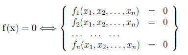
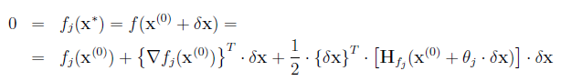
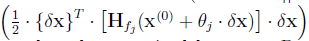
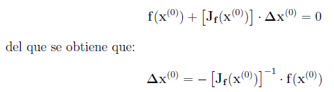
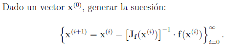
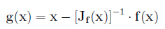
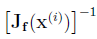

3.1 Métodos iterativos.
Un método iterativo es un método que progresivamente va calculando aproximaciones a la solución de un problema. En Matem´aticas, en un método iterativo se repite un mismo proceso de mejora sobre una soluci´on aproximada: se espera que lo obtenido sea una soluci´on más aproximada que la inicial. El proceso se repite sobre esta nueva soluci´on hasta que el resultado más reciente satisfaga ciertos requisitos. A diferencia de los métodos directos, en los cuales se debe terminar el proceso para tener la respuesta, en los métodos iterativos se puede suspender el proceso al término de una iteración y se obtiene una aproximación a la solución..
Ventajas y Desventajas
Un elemento en contra que tienen los métodos iterativos sobre los métodos directos es que calculan aproximaciones a la soluci´on. Los métodos iterativos se usan cuando no se conoce un m´etodo para obtener la soluci´on en forma exacta. También se utilizan cuando el m´etodo para determinar la soluci´on exacta requiere mucho tiempo de cálculo, cuando una respuesta aproximada es adecuada, y cuando el número de iteraciones es relativamente reducido.
Método Iterativo General:
Un método iterativo consta de los siguientes pasos.
1. inicia con una soluci´on aproximada (Semilla),
2. ejecuta una serie de cálculos para obtener o construir una mejor aproximación partiendo de la aproximación semilla. La formula que permite construir la aproximación usando otra se conoce como ecuación de recurrencia.
3. se repite el paso anterior pero usando como semilla la aproximación obtenida.
El método Jacobi:
Es el método iterativo para resolver sistemas de ecuaciones lineales más simple y se aplica solo a sistemas cuadrados, es decir a sistemas con tantas incógnitas como ecuaciones.
1. Primero se determina la ecuación de recurrencia. Para ello se ordenan las ecuaciones y las incógnitas. De la ecuación i se despeja la incógnita i. En notación matricial se escribirse como: x = c + Bx
2. Se toma una aproximación para las soluciones y a esta se le designa por xo
3. Se itera en el ciclo que cambia la aproximación.
Convergencia y convergencia en Jacobi:
Uno de los principales problemas de los métodos iterativos es la garantìa de que el m´etodo va a converger, es decir, va a producir una sucesión de aproximaciones cada vez efectivamente más próximas a la solución. En el caso del método de Jacobi no existe una condición exacta para la convergencia. Lo mejor es una condición que garantiza la convergencia, pero en caso de no cumplirse puede o no haberla es la siguiente:
Si la matriz de coeficientes original del sistema de ecuaciones es diagonalmente dominante, el m´etodo de Jacobi seguro converge.
En ciertas ocasiones al aplicar Jacobi la matriz no es diagonalmente dominante y por tanto no existir’ a garant´ıa de convergencia. Sin embargo, en algunos casos serìa posible reordenar las incógnitas en otra manera de forma que la nueva matriz de coeficientes sea diagonalmente dominante. Esto se puede detectar revisando todos los posibles ordenamientos de las incógnitas y ver como es la matriz resultante. Claro que esto conlleva un bueno numero de pruebas pues el numero posible de ordenamientos en n variables es (n − 1)! pero cuando n es reducido es sencillo.
El Método de Gauss-Seidel: Idea:
El método de Gauss-Seidel es muy semejante al m´etodo de Jacobi. Mientras que en el de Jacobi se utiliza el valor de las incógnitas para determinar una nueva aproximación, en el de Gauss-Seidel se va utilizando los valores de las incógnitas recién calculados en la misma iteración, y no en la siguiente. Por ejemplo, en el método de Jacobi se obtiene en el primer calculo xi+1, pero este valor de x no se utiliza sino hasta la siguiente iteración. En el m´etodo de Gauss-Seidel en lugar de eso se utiliza de xi+1 en lugar de xi en forma inmediata para calcular el valor de yi+1 de igual manera procede con las siguientes variables; siempre se utilizan las variables recién calculadas.
3.2 Sistemas de ecuaciones no lineales.
Considérese nuevamente el sistema de n ecuaciones no lineales con n incógnitas representado por:

Al igual que se hizo en el caso de una variable, supongamos que en un dominio cerrado D ⊂ IRn f (x) es una función de clase (C2(D))n. Y supongamos además que la ecuación anterior admite una solución x∗ en el dominio D. Para cualquier otro vector x(0) ∈ D , denotando por δx al vector tal que x∗ = x(0) + δx, la expresión del desarrollo en serie de Taylor nos permitiría afirmar, para cada una de las ecuaciones del sistema, que existen valores θj ∈ [0, 1] (j = 1, 2, .., n) tales que:

Donde Hfj (x) es la matriz hessiana de la función fj(x).
Si conocido x(0) se fuese capaz de determinar δx resolviendo el sistema formado para j = 1, 2, .., n, por las ecuaciones:
podría determinarse x∗ como x∗ = x(0) + δx. Pero para resolver este sistema primero deberíamos conocer los valores de θj (lo cual no es obvio) y, una vez conocidos, resolver un sistema, en general, no lineal pues obs´ervese que δx interviene en la expresión de las matrices hessianas Hfj (x(0) + θj · δx). Por tanto, salvo en situaciones muy particulares, no se ganaría gran cosa remplazando el problema de resolver f (x) = 0 por el de resolver el sistema anterior.
El método de Newton-Raphson (o método de linealización de Newton) se sustenta en simplificar las expresiones anteriores linealizándolas. Para ello considera que si se está suficientemente cerca de la solución (es decir si ||δx|| es suficientemente pequeño) los términos.

podrán despreciarse frente a los otros términos de cada ecuación del sistema. Por ello, denotando por [Jf (x)] a la matriz jacobiana de f en el punto x, en este método se resuelve el sistema lineal:

Obviamente, al ser diferente el sistema linealizado que el proporcionado por el desarrollo de Taylor, se tendrá que Δx (0) ≠ δx y por tanto x* = x(0)+δx ≠ x(1)= x(0) +Δx(0). De una forma intuitiva (que después deberemos precisar cuando es correcta) puede pensarse que aunque x(1) sea diferente de x* sería un vector más próximo a x* que x (0) pues lo hemos obtenido ”aproximando” el valor δx que nos llevaba de x(0) a x*. Con ello el método de Newton-Raphson propone repetir este proceso de forma recursiva hasta estar lo suficientemente cercanos a la solución buscada. Más concretamente el método de Newton-Raphson consiste en:

Sobre este método, en primer lugar, puede observarse que si denotamos por:

El método de Newton, en cada iteración, exige evaluar la matriz

Ello,En el caso de que el número de ecuaciones sea elevado, requiere un gran esfuerzo computacional. Por ello se han desarrollado diferentes variantes del método de Newton en las que, perdiendo algo de su velocidad de convergencia, se aproxima dicha matriz inversa de la jacobiana. Algunas de estas variantes las presentaremos un poco más adelante.
Asimismo, el método de Newton-Raphson suele programarse de forma algo diferente a como lo hemos expuesto hasta ahora. En efecto, en el método de Newton- Raphson en cada iteración puede determinarse el vector incremento a través de la resolución de un sistema de n ecuaciones lineales y tras ello sumarse el vector de incrementos al vector con el que se inicializó la iteración.
3.3 Iteración y convergencia de sistemas de ecuaciones.
El uso de métodos de iteración funcional con sistemas de ecuaciones son completamente diferentes de aquellos para ecuaciones simples. Se observa que es útil frecuentemente una información a priori sobre la localización de la raíz; cuando esto no es posible podemos usar un método siempre convergente para obtener una buena aproximación de esta. Por lo tanto, en este caso estamos interesados principalmente en la eficiencia del método. La convergencia en sistema de ecuaciones es un problema importancia, que usualmente quedaremos satisfechos con cualquier orden de convergencia, únicamente si el método es convergente.
Frecuentemente, si la aproximación lineal no está completamente cercana a la solución, la iteración no será convergente. La forma del error aclararía mas el concepto anterior.
3.4 Aplicaciones
Las matrices son utilizadas en aplicaciones de gráficos de geometría, física e informática. La matriz de las cantidades o expresiones definidas por filas y columnas; tratados como un solo elemento y manipulados de acuerdo con las reglas. Cálculos de matriz pueden entenderse como un conjunto de herramientas que incluye el estudio de métodos y procedimientos utilizados para recoger, clasificar y analizar datos. En muchas aplicaciones es necesario calcular la matriz inversa donde esta calculadora en línea matriz inversa puede ayudarle a sin esfuerzo facilitan sus cálculos para las respectivas entradas.
En casos simples, es relativamente fácil resolver una ecuación siempre y cuando se satisfagan ciertas condiciones. Sin embargo, en casos más complicados, es difícil o engorroso obtener expresiones simbólicas para las soluciones, y por ello a veces se utilizan soluciones numéricas aproximadas.